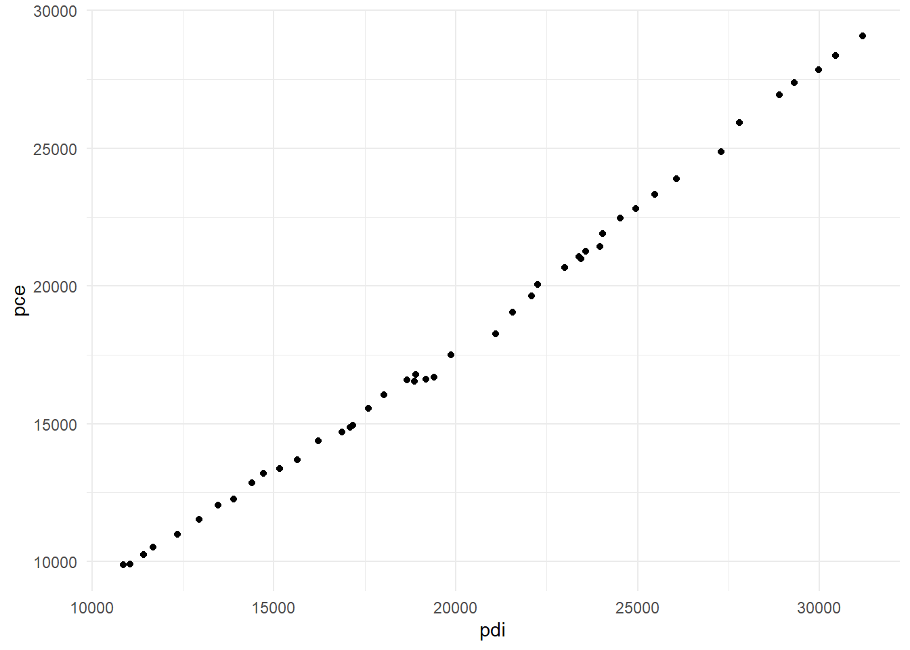
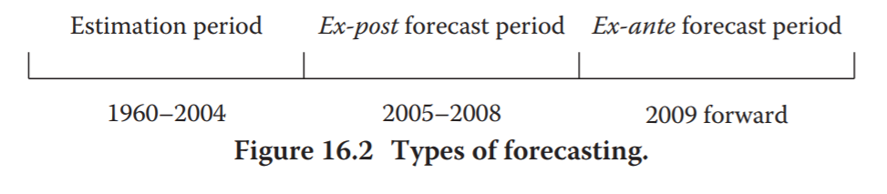
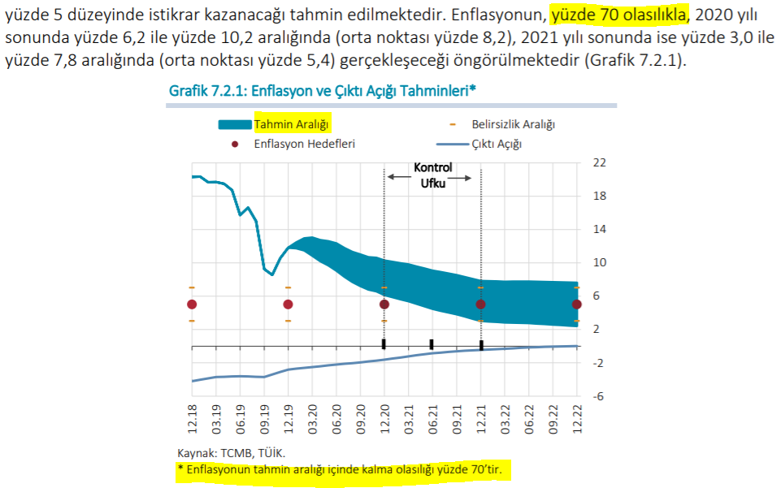

Konu 4 Regresyon Modelleriyle Öngörü
Öngörülerin kullanışlı olduğunu gösteren bazı alanlar:
Planlama ve kontrol işlemleri
Pazarlama
Ekonomi
Finansal varlık yönetimi
Finansal risk yönetimi
İşletme ve devlet bütçesi
Demografi
Kriz yönetimi
Gujarati, geçmiş ve bugünkü bilgiye dayanan öngörünün amacı ilgi alanına giren konunun gelecekte alabileceği yola ait niceliksel tahmin(ler) vermektir. Bu amaçla ekonometrik modeller geliştirir ve gelecekteki güzergah için en az bir öngörü yöntemini kullanırız der.
Basit bir şekilde aşağıdaki regresyonu ele alalım:
\(pce_t = \beta_1 + \beta_2pdi_t + \epsilon_t\)
Bağımlı değişken:
- pce: Kişi başına düşen kişisel tüketim harcaması
Bağımsız değişken(ler):
- pdi: Kişi başına düşen kişisel harcanabilir gelir (vergi sonrası)
Bu bir tüketim fonksiyonudur. Regresyonun eğim parametresi marjinal tüketim eğilimine eşittir. Yani, gelirdeki 1 $ artış için artan tüketim harcamasıdır.
library(readxl);library(tidyverse);library(magrittr)
setwd("C:/Users/datanerd/Desktop/Github/rEkonometri/data")
df <- read_excel("Table16_1.xls")## tibble [49 x 3] (S3: tbl_df/tbl/data.frame)
## $ year: num [1:49] 1960 1961 1962 1963 1964 ...
## $ pce : num [1:49] 9871 9911 10243 10512 10985 ...
## $ pdi : num [1:49] 10865 11052 11413 11672 12342 ...Veriler 1960-2008 yıllarını kapsıyor. Tüketim fonksiyonunun tahmininde ilk olarak 1960-2004 arası gözlemleri kullanıyoruz ve son 4 gözlemi (2005-2008) tahmin edilen modelin performansını değerlendirebilmek amacıyla ayırıyoruz.
Öncelikle iki değişkenin ilişkisini grafiğe aktaralım.
ggplot(df_train, aes(x = pdi, y = pce)) +
geom_point() +
theme_minimal() +
theme(axis.title = element_text())
Modelin çıktısına da ulaşalım.
##
## Call:
## lm(formula = pce ~ pdi, data = df_train)
##
## Residuals:
## Min 1Q Median 3Q Max
## -789.30 -284.75 -12.24 291.49 592.29
##
## Coefficients:
## Estimate Std. Error t value Pr(>|t|)
## (Intercept) -1.084e+03 1.940e+02 -5.589 1.44e-06 ***
## pdi 9.538e-01 9.233e-03 103.298 < 2e-16 ***
## ---
## Signif. codes: 0 '***' 0.001 '**' 0.01 '*' 0.05 '.' 0.1 ' ' 1
##
## Residual standard error: 353.5 on 43 degrees of freedom
## Multiple R-squared: 0.996, Adjusted R-squared: 0.9959
## F-statistic: 1.067e+04 on 1 and 43 DF, p-value: < 2.2e-16pdi’daki 1 $’lık artış pce’de 0.95 $’lık artışa neden oluyor. Dolayısıyla marjinal tüketim eğilimi 0.95’tir.
Çıktıda da görebileceğimiz gibi modeli yaklaşık olarak \(\hat{pce_t} = -1083.98 + 0.95pdi_t\) bulduk.
Öngörüde bulunmadan önce bazı terimleri bilmemiz gerekiyor.

Nokta ve aralık öngörüleri: Noktada her öngörü dönemi için tek bir değer bulunur. Aralıkta ise belli bir olasılık ile alt ve üst sınırlar vardır. Aralık öngörü için Merkez Bankası’ndan örnek verebiliriz.

Gerçekleşen ve öncül öngörüler (ex post and ex ante forecasts): Örneğimizde 1960-2004 yıllarını alıp model kurmuştuk. Bu tahmin dönemidir (estimation period). Gerçekleşen öngörü (ex post forecast) döneminde ise bağımlı-bağımsız değişken değerlerini biliriz. 2005-2008 yılları ayırdığımız dönemlerdir. Bu değerleri aslında biliyoruz. Bu dönem performans ölçümü ile alakalıdır. Son olarak öncül öngörüde (ex ante forecast) bağımlı değişken değerlerini tahmin döneminin ilerisi için tahmin ederiz.
## # A tibble: 4 x 3
## pdi pce year
## <dbl> <dbl> <dbl>
## 1 31318 29771 2005
## 2 32271 30341 2006
## 3 32648 30838 2007
## 4 32514 30479 200831,318 milyar $ olan 2005 yılı kişi başı pdi değeri verildiğinde yine 2005 yılı için pce nedir? Burada nokta öngörü yapacağız. Kişi başı pdi verildiğinde en iyi ortalama kestirimi elde ederiz.
\(\hat{pce}_{2005} = \beta_1 + \beta_2pdi_{2005} = -1083.98 + 0.95*31318 = 28668.12\)
31,318 milyar $ olan pdi verildiğinde 2005 için en iyi ortalama kestirim değeri 28,668 milyar $’dır. Biz bunun gerçek değerinin 29,771 milyar $ olduğunu biliyoruz. Yani, öngörü hatamız (forecast error) 1,103 milyar $’dır.
Peki, muhtemel öngörü hatamızı hesaplayabilir miyiz? Hata terimi normal dağılımlı ise…
2005 yılı için;
\(Pr[\hat{Y}_{2005} - t_{\alpha/2}sh(\hat{Y}_{2005}) \le E(Y_{2005}) \le \hat{Y}_{2005} + t_{\alpha/2}sh(\hat{Y}_{2005})] = \%95\)
\(\alpha = \%5\)
sh: Standart hata
Normal dağılım yerine t dağılımını kullandık. Çünkü gerçek hata varyansını tahmin etmek istiyoruz.
## fit lwr upr
## 1 28786.14 28553.71 29018.57En iyi tek tahmin 28,786 milyar $ olmasına rağmen %95 güven aralığı 28,553;29,018 milyar $ şeklindedir. Tabi biz bunu sadece 2005 için yapmayacağız. Her bir yıl için yaptığımızda ortaya bir güven bandı çıkacaktır.
df %>%
dplyr::select(pdi,year) %>%
filter(year %in% c(2005:2008)) -> expost
predict(model, newdata = expost, interval = "confidence")## fit lwr upr
## 1 28786.14 28553.71 29018.57
## 2 29695.08 29446.73 29943.43
## 3 30054.65 29799.94 30309.36
## 4 29926.85 29674.40 30179.29Bağımsız değişken ortalama değerden uzaklaştıkça öngörü hatası artacaktır. Bu da bandın genişlemesine yol açacaktır (Merkez Bankası’nın güven bandına tekrar bakın).
Bu yazıda öngörü konusuna odaklandığımız için sahte regresyon, otokorelasyon gibi karşımıza çıkabilecek sorunları atladık.